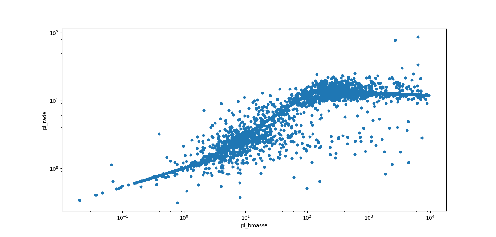
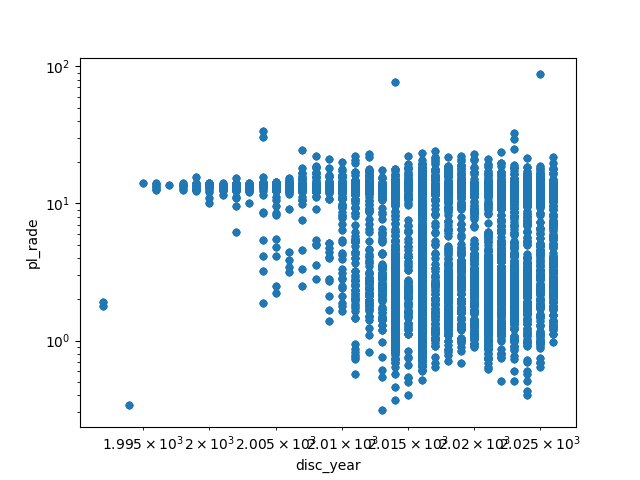
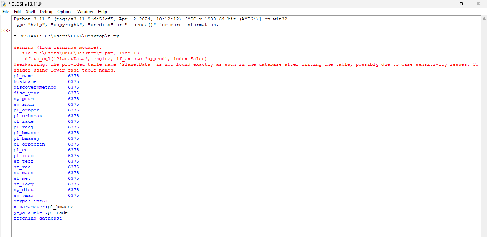

Upon integrating the NASA dataset into MySQL and establishing connectivity through Python, interactive exploratory data analysis scripts were executed. By passing custom parameters into dynamic SQL queries—while systematically filtering out missing entries—distinct log-scale graphical visualizations were generated to analyze underlying astrophysical trends.
For the first case, planet mass (pl_bmasse) was plotted against planet radius (pl_rade) on a log-log scale. This visualization maps out how planetary composition changes across different scales. Rocky planets exhibit a steady, predictable increase in radius as their mass grows. However, once the gas giant threshold is reached, the trend flattens out because immense gravitational self-compression squeezes the gas molecules tightly together.

For the second case, an evaluation of discovery parameters was conducted to test data correlation. While a distinct statistical correlation emerges when plotting historical survey metrics, analysis reveals an inherent methodological limitation: blindly brute-forcing correlations across variables does not uncover new astrophysical physics. Instead, the hidden factor driving the pattern is human technological development and instrument evolution—demonstrating how modern space-based telescopes uncovered populations of small planets that older ground-based instruments missed.

The backend pipeline successfully established database connectivity, handled null values by mapping them cleanly, and executed dynamic queries without execution errors. The terminal output verifying successful data retrieval and record counts is captured below.
